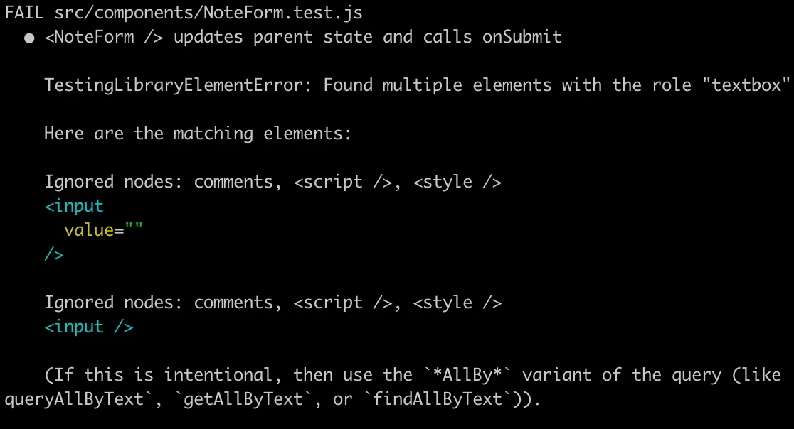
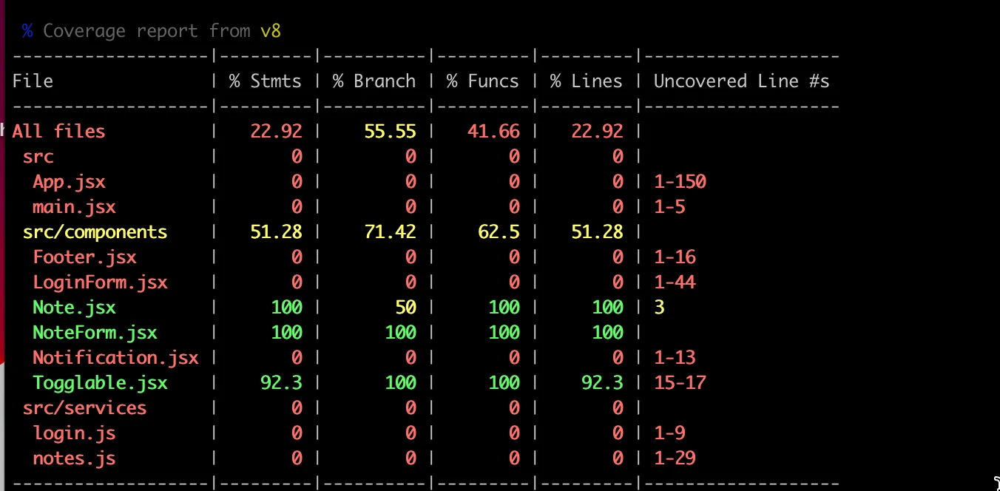
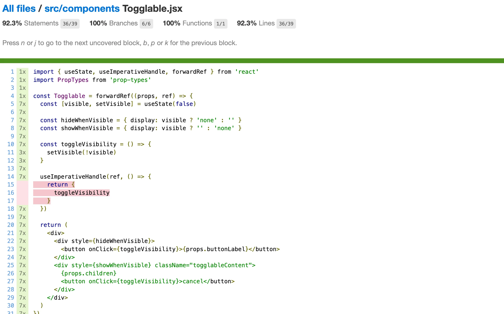

اختبار تطبيقات React
هناك طرق مختلفة عديدة لاختبار تطبيقات React. لنلقِ نظرة عليها فيما يلي.
استخدمت الدورة سابقاً مكتبة Jest التي طوّرتها Facebook لاختبار مكوّنات React. نحن الآن نستخدم الجيل الجديد من أدوات الاختبار من مطوّري Vite وتُسمى Vitest. بصرف النظر عن الإعدادات، تقدّم المكتبتان واجهة برمجة واحدة نفسها، لذا لا يوجد عملياً أي فرق في شيفرة الاختبار.
لنبدأ بتثبيت Vitest ومكتبة jsdom التي تحاكي متصفح الويب:
npm install --save-dev vitest jsdom
بالإضافة إلى Vitest، نحتاج أيضاً إلى مكتبة اختبار أخرى تساعدنا على عرض المكوّنات لأغراض الاختبار. الخيار الأفضل حالياً لذلك هو react-testing-library الذي شهد نمواً سريعاً في الشعبية في الآونة الأخيرة. يجدر أيضاً توسيع القدرة التعبيرية للاختبارات بمكتبة jest-dom.
لنثبّت المكتبات بالأمر:
npm install --save-dev @testing-library/react @testing-library/jest-dom
قبل أن نتمكن من إجراء الاختبار الأول، نحتاج إلى بعض الإعدادات.
نضيف سكربتاً إلى ملف package.json لتشغيل الاختبارات:
{
"scripts": {
// ...
"test": "vitest run"
}
// ...
}
لننشئ ملف testSetup.js في جذر المشروع بالمحتوى التالي
import { afterEach } from 'vitest'
import { cleanup } from '@testing-library/react'
import '@testing-library/jest-dom/vitest'
afterEach(() => {
cleanup()
})
الآن، بعد كل اختبار، تُنفَّذ الدالة cleanup لإعادة ضبط jsdom الذي يحاكي المتصفح.
وسّع ملف vite.config.js كما يلي
export default defineConfig({
// ...
test: {
environment: 'jsdom',
globals: true,
setupFiles: './testSetup.js',
}
})
مع globals: true، لا حاجة لاستيراد كلمات مفتاحية مثل describe و test و expect في الاختبارات.
لنكتب أولاً اختبارات للمكوّن المسؤول عن عرض ملاحظة:
const Note = ({ note, toggleImportance }) => {
const label = note.important
? 'make not important'
: 'make important'
return (
<li className='note'> // highlight-line
{note.content}
<button onClick={toggleImportance}>{label}</button>
</li>
)
}
لاحظ أن عنصر li يحمل القيمة note للخاصية className الخاصة بـ CSS، والتي يمكن استخدامها للوصول إلى المكوّن في اختباراتنا.
عرض المكوّن للاختبارات
سنكتب اختبارنا في الملف src/components/Note.test.jsx، الموجود في الدليل نفسه الذي يوجد فيه المكوّن نفسه.
يتحقق الاختبار الأول من أن المكوّن يعرض محتوى الملاحظة:
import { render, screen } from '@testing-library/react'
import Note from './Note'
test('renders content', () => {
const note = {
content: 'Component testing is done with react-testing-library',
important: true
}
render(<Note note={note} />)
const element = screen.getByText('Component testing is done with react-testing-library')
expect(element).toBeDefined()
})
بعد الإعداد الأولي، يعرض الاختبار المكوّن باستخدام دالة render التي توفّرها react-testing-library:
render(<Note note={note} />)
عادةً تُعرض مكوّنات React في DOM. دالة render التي استخدمناها تعرض المكوّنات بصيغة مناسبة للاختبارات دون عرضها في DOM.
يمكننا استخدام الكائن screen للوصول إلى المكوّن المعروض. نستخدم دالة screen المسماة getByText للبحث عن عنصر يحوي محتوى الملاحظة والتأكد من وجوده:
const element = screen.getByText('Component testing is done with react-testing-library')
expect(element).toBeDefined()
يُفحص وجود عنصر باستخدام أمر expect الخاص بـ Vitest. يولّد expect تأكيداً (assertion) لوسيطه، ويمكن اختبار صحته باستخدام دوال شرطية مختلفة. استخدمنا الآن toBeDefined الذي يختبر ما إذا كان وسيط expect المسمى element موجوداً.
شغّل الاختبار بالأمر npm test:
$ npm test
> notes-frontend@0.0.0 test
> vitest run
RUN v3.2.3 /home/vejolkko/repot/fullstack-examples/notes-frontend
✓ src/components/Note.test.jsx (1 test) 19ms
✓ renders content 18ms
Test Files 1 passed (1)
Tests 1 passed (1)
Start at 14:31:54
Duration 874ms (transform 51ms, setup 169ms, collect 19ms, tests 19ms, environment 454ms, prepare 87ms)
يشتكي Eslint من الكلمتين المفتاحيتين test و expect في الاختبارات. يمكن حل المشكلة بإضافة الإعداد التالي إلى ملف eslint.config.js:
// ...
export default [
// ...
// highlight-start
{
files: ['**/*.test.{js,jsx}'],
languageOptions: {
globals: {
...globals.vitest
}
}
}
// highlight-end
]
هكذا يُبلَّغ ESLint بأن كلمات Vitest المفتاحية متاحة عالمياً في ملفات الاختبار.
موقع ملف الاختبار
في React يوجد (على الأقل) اصطلاحان مختلفان لموقع ملف الاختبار. أنشأنا ملفات اختبارنا وفق المعيار الحالي بوضعها في الدليل نفسه الذي يوجد فيه المكوّن المُختبَر.
الاصطلاح الآخر هو تخزين ملفات الاختبار "بشكل عادي" في دليل test منفصل. أياً كان الاصطلاح الذي نختاره، يكاد يكون من المؤكد أنه خطأ في نظر أحدهم.
لا يعجبني تخزين الاختبارات وشيفرة التطبيق في الدليل نفسه. مع ذلك، سنتبع هذا النهج الآن، لأنه الممارسة الأكثر شيوعاً في المشاريع الصغيرة.
البحث عن محتوى في مكوّن
تقدّم حزمة react-testing-library طرقاً مختلفة عديدة لفحص محتوى المكوّن المُختبَر. في الواقع، لا حاجة إلى expect في اختبارنا على الإطلاق:
import { render, screen } from '@testing-library/react'
import Note from './Note'
test('renders content', () => {
const note = {
content: 'Component testing is done with react-testing-library',
important: true
}
render(<Note note={note} />)
const element = screen.getByText('Component testing is done with react-testing-library')
expect(element).toBeDefined() // highlight-line
})
يفشل الاختبار إذا لم يجد getByText العنصر الذي يبحث عنه.
يبحث الأمر getByText افتراضياً عن عنصر يحتوي فقط على النص المقدَّم كوسيط ولا شيء غير ذلك. لنفترض أن مكوّناً يعرض نصاً في عنصر HTML كما يلي:
const Note = ({ note, toggleImportance }) => {
const label = note.important
? 'make not important' : 'make important'
return (
<li className='note'>
Your awesome note: {note.content} // highlight-line
<button onClick={toggleImportance}>{label}</button>
</li>
)
}
export default Note
دالة getByText التي يستخدمها الاختبار لا تجد العنصر:
test('renders content', () => {
const note = {
content: 'Does not work anymore :(',
important: true
}
render(<Note note={note} />)
const element = screen.getByText('Does not work anymore :(')
expect(element).toBeDefined()
})
إذا أردنا البحث عن عنصر يحتوي على النص، يمكننا استخدام خيار إضافي:
const element = screen.getByText(
'Does not work anymore :(', { exact: false }
)
أو يمكننا استخدام الدالة findByText:
const element = await screen.findByText('Does not work anymore :(')
من المهم ملاحظة أن findByText، بخلاف دوال ByText الأخرى، تُعيد promise!
هناك حالات تكون فيها صيغة أخرى من الدالة queryByText مفيدة. تُعيد الدالة العنصر لكن لا تُسبب استثناءً إذا لم يُعثر عليه.
يمكننا مثلاً استخدام الدالة للتأكد من أن شيئاً ما غير معروض في المكوّن:
test('does not render this', () => {
const note = {
content: 'This is a reminder',
important: true
}
render(<Note note={note} />)
const element = screen.queryByText('do not want this thing to be rendered')
expect(element).toBeNull()
})
توجد دوال أخرى أيضاً، مثل getByTestId، التي تبحث عن العناصر بناءً على حقول id مُنشأة خصيصاً لأغراض الاختبار.
يمكننا أيضاً استخدام محدّدات CSS للعثور على العناصر المعروضة باستخدام الدالة querySelector الخاصة بالكائن container الذي هو أحد الحقول التي تُعيدها render:
import { render, screen } from '@testing-library/react'
import Note from './Note'
test('renders content', () => {
const note = {
content: 'Component testing is done with react-testing-library',
important: true
}
const { container } = render(<Note note={note} />) // highlight-line
// highlight-start
const div = container.querySelector('.note')
expect(div).toHaveTextContent(
'Component testing is done with react-testing-library'
)
// highlight-end
})
يُوصى مع ذلك بالبحث عن العناصر أساساً باستخدام دوال غير كائن container ومحدّدات CSS. فغالباً ما يمكن تغيير خصائص CSS دون التأثير على وظائف التطبيق، ولا يكون المستخدمون على دراية بها. الأفضل البحث عن العناصر بناءً على خصائص مرئية للمستخدم، مثلاً باستخدام الدالة getByText. بهذه الطريقة، تحاكي الاختبارات الطبيعة الفعلية للمكوّن وكيف سيجد المستخدم العنصر على الشاشة بشكل أفضل.
تصحيح أخطاء الاختبارات
نصادف عادةً أنواعاً مختلفة عديدة من المشكلات عند كتابة اختباراتنا.
يمتلك الكائن screen دالة debug يمكن استخدامها لطباعة HTML الخاص بمكوّن في الطرفية. إذا غيّرنا الاختبار كما يلي:
import { render, screen } from '@testing-library/react'
import Note from './Note'
test('renders content', () => {
const note = {
content: 'Component testing is done with react-testing-library',
important: true
}
render(<Note note={note} />)
screen.debug() // highlight-line
// ...
})
يُطبع HTML في وحدة التحكم:
console.log
<body>
<div>
<li
class="note"
>
Component testing is done with react-testing-library
<button>
make not important
</button>
</li>
</div>
</body>
من الممكن أيضاً استخدام الدالة نفسها لطباعة عنصر مرغوب في وحدة التحكم:
import { render, screen } from '@testing-library/react'
import Note from './Note'
test('renders content', () => {
const note = {
content: 'Component testing is done with react-testing-library',
important: true
}
render(<Note note={note} />)
const element = screen.getByText('Component testing is done with react-testing-library')
screen.debug(element) // highlight-line
expect(element).toBeDefined()
})
الآن يُطبع HTML الخاص بالعنصر المرغوب:
<li
class="note"
>
Component testing is done with react-testing-library
<button>
make not important
</button>
</li>
النقر على الأزرار في الاختبارات
بالإضافة إلى عرض المحتوى، يحرص مكوّن Note أيضاً على أنه عند الضغط على الزر المرتبط بالملاحظة، تُستدعى دالة معالج الحدث toggleImportance.
لنثبّت مكتبة user-event التي تجعل محاكاة إدخال المستخدم أسهل قليلاً:
npm install --save-dev @testing-library/user-event
يمكن اختبار هذه الوظيفة هكذا:
import { render, screen } from '@testing-library/react'
import userEvent from '@testing-library/user-event' // highlight-line
import Note from './Note'
// ...
test('clicking the button calls event handler once', async () => {
const note = {
content: 'Component testing is done with react-testing-library',
important: true
}
const mockHandler = vi.fn() // highlight-line
render(
<Note note={note} toggleImportance={mockHandler} /> // highlight-line
)
const user = userEvent.setup() // highlight-line
const button = screen.getByText('make not important') // highlight-line
await user.click(button) // highlight-line
expect(mockHandler.mock.calls).toHaveLength(1) // highlight-line
})
هناك بضعة أمور مثيرة للاهتمام تتعلق بهذا الاختبار. معالج الحدث هو دالة mock مُعرَّفة بـ Vitest:
const mockHandler = vi.fn()
تُبدأ جلسة للتفاعل مع المكوّن المعروض:
const user = userEvent.setup()
يجد الاختبار الزر بناءً على النص من المكوّن المعروض وينقر العنصر:
const button = screen.getByText('make not important')
await user.click(button)
يحدث النقر بالدالة click الخاصة بمكتبة userEvent.
يستخدم توقع الاختبار toHaveLength للتحقق من أن دالة mock قد استُدعيت مرة واحدة بالضبط:
expect(mockHandler.mock.calls).toHaveLength(1)
تُحفظ الاستدعاءات إلى دالة mock في المصفوفة mock.calls داخل كائن دالة mock.
تُستخدم كائنات ودوال mock عادةً كمكوّنات stub في الاختبار لاستبدال اعتماديات المكوّنات المُختبَرة. تتيح mocks إعادة استجابات ثابتة، والتحقق من عدد المرات التي تُستدعى فيها دوال mock وبأي معاملات.
في مثالنا، دالة mock خيار مثالي لأنه يمكن استخدامها بسهولة للتحقق من أن الدالة تُستدعى مرة واحدة بالضبط.
اختبارات لمكوّن Togglable
لنكتب بضعة اختبارات لمكوّن Togglable. تظهر الاختبارات أدناه:
import { render, screen } from '@testing-library/react'
import userEvent from '@testing-library/user-event'
import Togglable from './Togglable'
describe('<Togglable />', () => {
beforeEach(() => {
render(
<Togglable buttonLabel="show...">
<div>togglable content</div>
</Togglable>
)
})
test('renders its children', () => {
screen.getByText('togglable content')
})
test('at start the children are not displayed', () => {
const element = screen.getByText('togglable content')
expect(element).not.toBeVisible()
})
test('after clicking the button, children are displayed', async () => {
const user = userEvent.setup()
const button = screen.getByText('show...')
await user.click(button)
const element = screen.getByText('togglable content')
expect(element).toBeVisible()
})
})
تُستدعى الدالة beforeEach قبل كل اختبار، فتعرض مكوّن Togglable.
يتحقق الاختبار الأول من أن مكوّن Togglable يعرض مكوّنه الفرعي
<div>
togglable content
</div>
تستخدم الاختبارات المتبقية الدالة toBeVisible للتحقق من أن المكوّن الفرعي لمكوّن Togglable غير مرئي في البداية، أي أن نمط عنصر div يحتوي على { display: 'none' }. ويتحقق اختبار آخر من أنه عند الضغط على الزر يصبح المكوّن مرئياً، أي أن نمط إخفائه لم يعد مُسنَداً إلى المكوّن.
لنضف أيضاً اختباراً يمكن استخدامه للتحقق من أنه يمكن إخفاء المحتوى المرئي بالنقر على الزر الثاني في المكوّن:
describe('<Togglable />', () => {
// ...
test('toggled content can be closed', async () => {
const user = userEvent.setup()
const button = screen.getByText('show...')
await user.click(button)
const closeButton = screen.getByText('cancel')
await user.click(closeButton)
const element = screen.getByText('togglable content')
expect(element).not.toBeVisible()
})
})
اختبار النماذج
استخدمنا بالفعل دالة click الخاصة بـ user-event في اختباراتنا السابقة للنقر على الأزرار.
const user = userEvent.setup()
const button = screen.getByText('show...')
await user.click(button)
يمكننا أيضاً محاكاة إدخال النص باستخدام userEvent.
لنجرِ اختباراً لمكوّن NoteForm. شيفرة المكوّن كما يلي.
import { useState } from 'react'
const NoteForm = ({ createNote }) => {
const [newNote, setNewNote] = useState('')
const addNote = event => {
event.preventDefault()
createNote({
content: newNote,
important: true
})
setNewNote('')
}
return (
<div>
<h2>Create a new note</h2>
<form onSubmit={addNote}>
<input
value={newNote}
onChange={event => setNewNote(event.target.value)}
/>
<button type="submit">save</button>
</form>
</div>
)
}
export default NoteForm
يعمل النموذج باستدعاء الدالة المستلمة كـ props المسماة createNote، مع تفاصيل الملاحظة الجديدة.
الاختبار كما يلي:
import { render, screen } from '@testing-library/react'
import NoteForm from './NoteForm'
import userEvent from '@testing-library/user-event'
test('<NoteForm /> updates parent state and calls onSubmit', async () => {
const createNote = vi.fn()
const user = userEvent.setup()
render(<NoteForm createNote={createNote} />)
const input = screen.getByRole('textbox')
const sendButton = screen.getByText('save')
await user.type(input, 'testing a form...')
await user.click(sendButton)
expect(createNote.mock.calls).toHaveLength(1)
expect(createNote.mock.calls[0][0].content).toBe('testing a form...')
})
تصل الاختبارات إلى حقل الإدخال باستخدام الدالة getByRole.
تُستخدم الدالة type الخاصة بـ userEvent لكتابة نص في حقل الإدخال.
يضمن توقع الاختبار الأول أن إرسال النموذج يستدعي دالة createNote. ويتحقق التوقع الثاني من أن معالج الحدث يُستدعى بالمعاملات الصحيحة - أي إن ملاحظة بالمحتوى الصحيح تُنشأ عند ملء النموذج.
يجدر بالذكر أن console.log القديم الجيد يعمل كالمعتاد في الاختبارات. مثلاً، إذا أردت رؤية شكل الاستدعاءات المحفوظة بواسطة كائن mock، يمكنك فعل ما يلي
test('<NoteForm /> updates parent state and calls onSubmit', async() => {
const user = userEvent.setup()
const createNote = vi.fn()
render(<NoteForm createNote={createNote} />)
const input = screen.getByRole('textbox')
const sendButton = screen.getByText('save')
await user.type(input, 'testing a form...')
await user.click(sendButton)
console.log(createNote.mock.calls) // highlight-line
})
في منتصف تشغيل الاختبارات، يُطبع ما يلي في وحدة التحكم:
[ [ { content: 'testing a form...', important: true } ] ]
حول العثور على العناصر
لنفترض أن النموذج يحتوي على حقلي إدخال
const NoteForm = ({ createNote }) => {
// ...
return (
<div>
<h2>Create a new note</h2>
<form onSubmit={addNote}>
<input
value={newNote}
onChange={event => setNewNote(event.target.value)}
/>
// highlight-start
<input
value={...}
onChange={...}
/>
// highlight-end
<button type="submit">save</button>
</form>
</div>
)
}
الآن النهج الذي يستخدمه اختبارنا للعثور على حقل الإدخال
const input = screen.getByRole('textbox')
سيسبب خطأ:

تقترح رسالة الخطأ استخدام getAllByRole. يمكن إصلاح الاختبار كما يلي:
const inputs = screen.getAllByRole('textbox')
await user.type(inputs[0], 'testing a form...')
تُعيد الدالة getAllByRole الآن مصفوفة، وحقل الإدخال الصحيح هو العنصر الأول في المصفوفة. لكن هذا النهج مريب قليلاً لأنه يعتمد على ترتيب حقول الإدخال.
إذا عُرّف label لحقل الإدخال، يمكن تحديد حقل الإدخال باستخدامه مع دالة getByLabelText. مثلاً، إذا أضفنا label إلى حقل الإدخال:
// ...
<label> // highlight-line
content // highlight-line
<input
value={newNote}
onChange={event => setNewNote(event.target.value)}
/>
</label> // highlight-line
// ...
يمكن للاختبار تحديد حقل الإدخال كما يلي:
test('<NoteForm /> updates parent state and calls onSubmit', async () => {
const user = userEvent.setup()
const createNote = vi.fn()
render(<NoteForm createNote={createNote} />)
const input = screen.getByLabelText('content') // highlight-line
const sendButton = screen.getByText('save')
await user.type(input, 'testing a form...')
await user.click(sendButton)
expect(createNote.mock.calls).toHaveLength(1)
expect(createNote.mock.calls[0][0].content).toBe('testing a form...')
})
غالباً ما تحتوي حقول الإدخال على نص placeholder يلمّح للمستخدم إلى نوع الإدخال المتوقع. لنضف placeholder إلى نموذجنا:
const NoteForm = ({ createNote }) => {
// ...
return (
<div>
<h2>Create a new note</h2>
<form onSubmit={addNote}>
<input
value={newNote}
onChange={event => setNewNote(event.target.value)}
placeholder='write note content here' // highlight-line
/>
<input
value={...}
onChange={...}
/>
<button type="submit">save</button>
</form>
</div>
)
}
الآن العثور على حقل الإدخال الصحيح سهل باستخدام الدالة getByPlaceholderText:
test('<NoteForm /> updates parent state and calls onSubmit', async () => {
const user = userEvent.setup()
const createNote = vi.fn()
render(<NoteForm createNote={createNote} />)
const input = screen.getByPlaceholderText('write note content here') // highlight-line
const sendButton = screen.getByText('save')
await user.type(input, 'testing a form...')
await user.click(sendButton)
expect(createNote.mock.calls).toHaveLength(1)
expect(createNote.mock.calls[0][0].content).toBe('testing a form...')
})
أحياناً قد يكون العثور على العنصر الصحيح باستخدام الدوال الموصوفة أعلاه صعباً. في مثل هذه الحالات، البديل هو الدالة querySelector الخاصة بالكائن container، الذي تُعيده render، كما ذُكر سابقاً في هذا الجزء. يمكن استخدام أي محدّد CSS مع هذه الدالة للبحث عن العناصر في الاختبارات.
تأمّل مثلاً أننا سنعرّف id فريداً لحقل الإدخال:
const NoteForm = ({ createNote }) => {
// ...
return (
<div>
<h2>Create a new note</h2>
<form onSubmit={addNote}>
<input
value={newNote}
onChange={event => setNewNote(event.target.value)}
id='note-input' // highlight-line
/>
<input
value={...}
onChange={...}
/>
<button type="submit">save</button>
</form>
</div>
)
}
يمكن الآن العثور على عنصر الإدخال في الاختبار كما يلي:
const { container } = render(<NoteForm createNote={createNote} />)
const input = container.querySelector('#note-input')
مع ذلك، سنلتزم بنهج استخدام getByPlaceholderText في الاختبار.
تغطية الاختبار
يمكننا معرفة التغطية لاختباراتنا بسهولة بتشغيلها بالأمر.
npm test -- --coverage
في المرة الأولى التي تشغّل فيها الأمر، سيسألك Vitest إذا كنت تريد تثبيت المكتبة المطلوبة @vitest/coverage-v8. ثبّتها، ثم شغّل الأمر مجدداً:

سيُنشأ تقرير HTML في دليل coverage. سيخبرنا التقرير بأسطر الشيفرة غير المُختبَرة في كل مكوّن:

لنضف الدليل coverage/ إلى ملف .gitignore لاستبعاد محتوياته من التحكم بالإصدارات:
//...
coverage/
يمكنك العثور على شيفرة تطبيقنا الحالي كاملةً في فرع part5-8 من مستودع GitHub هذا.
تمارين 5.13.-5.16.
5.13: اختبارات قائمة المدونات، الخطوة 1
أنشئ اختباراً يتحقق من أن المكوّن الذي يعرض مدونة يعرض عنوان المدونة وكاتبها، لكنه لا يعرض رابطها ولا عدد الإعجابات افتراضياً.
أضف أصناف CSS إلى المكوّن للمساعدة في الاختبار حسب الحاجة.
5.14: اختبارات قائمة المدونات، الخطوة 2
أنشئ اختباراً يتحقق من ظهور رابط المدونة وعدد الإعجابات عند النقر على الزر المتحكم في التفاصيل المعروضة.
5.15: اختبارات قائمة المدونات، الخطوة 3
أنشئ اختباراً يضمن أنه إذا نُقر على زر like مرتين، فإن معالج الحدث الذي استقبله المكوّن كـ props يُستدعى مرتين.
5.16: اختبارات قائمة المدونات، الخطوة 4
أنشئ اختباراً لنموذج المدونة الجديد. يجب أن يتحقق الاختبار من أن النموذج يستدعي معالج الحدث الذي استقبله كـ props بالتفاصيل الصحيحة عند إنشاء مدونة جديدة.
اختبارات تكامل الواجهة الأمامية
في الجزء السابق من مواد الدورة، كتبنا اختبارات تكامل للواجهة الخلفية تختبر منطقها وتربط قاعدة البيانات عبر API الذي توفره الواجهة الخلفية. عند كتابة هذه الاختبارات، اتخذنا قراراً واعياً بعدم كتابة اختبارات وحدة، لأن شيفرة تلك الواجهة الخلفية بسيطة إلى حد كبير، ومن المحتمل أن تحدث الأخطاء في تطبيقنا في سيناريوهات أكثر تعقيداً مما تصلح له اختبارات الوحدة.
حتى الآن كانت جميع اختباراتنا للواجهة الأمامية اختبارات وحدة تحققت من الأداء الصحيح للمكوّنات الفردية. اختبار الوحدة مفيد أحياناً، لكن حتى مجموعة شاملة من اختبارات الوحدة لا تكفي للتحقق من أن التطبيق يعمل ككل.
يمكننا أيضاً إنشاء اختبارات تكامل للواجهة الأمامية. يختبر اختبار التكامل تعاون مكوّنات متعددة. وهو أصعب بكثير من اختبار الوحدة، إذ سيتعين علينا مثلاً محاكاة بيانات من الخادم. اخترنا التركيز على إنشاء اختبارات من طرف إلى طرف لاختبار التطبيق بأكمله. سنعمل على اختبارات من طرف إلى طرف في الفصل التالي من هذا الجزء.
اختبار اللقطات
تقدّم Vitest بديلاً مختلفاً تماماً عن الاختبار "التقليدي" يُسمى اختبار اللقطات (snapshot). الميزة المثيرة في اختبار اللقطات هي أن المطورين لا يحتاجون إلى تعريف أي اختبارات بأنفسهم، فاعتماد اختبار اللقطات بسيط بما يكفي.
المبدأ الأساسي هو مقارنة شيفرة HTML التي يعرّفها المكوّن بعد تغيّرها بشيفرة HTML التي كانت موجودة قبل تغيّرها.
إذا لاحظت اللقطة تغيّراً ما في HTML الذي يعرّفه المكوّن، فهو إما وظيفة جديدة أو "خطأ" ناتج عن غير قصد. تُخطر اختبارات اللقطات المطوّر إذا تغيّرت شيفرة HTML للمكوّن. وعلى المطوّر أن يخبر Vitest إن كان التغيير مرغوباً أم غير مرغوب. إذا كان التغيير في شيفرة HTML غير متوقع، فهو يشير بقوة إلى خطأ، ويمكن للمطوّر أن يصبح على دراية بهذه المشكلات المحتملة بسهولة بفضل اختبار اللقطات.